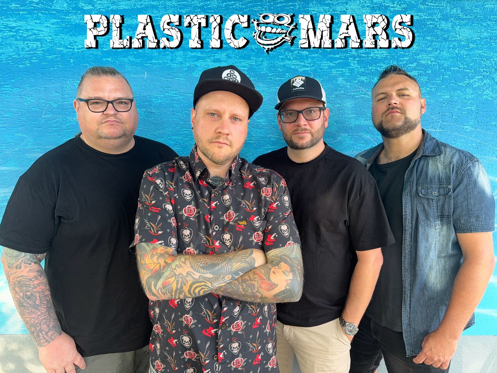

Review
PLASTIC MARS - Open The Door

Plastic Mars muss man bei RandaleFUNK nicht erst ausgraben. Die Band war hier schon mehrfach Thema.
Bei der neuen Single fällt trotzdem zuerst auf, was sie nicht macht: Sie rennt nicht los.
Das Ganze ist langsamer, bedächtiger, poppiger. Und das, ohne Kacke zu klingen.
Der Text kreist um Suche, Rastlosigkeit und das Gefühl, zwischen lauter Gesichtern keinen richtigen Platz zu finden. Jemand soll endlich eine Tür öffnen; dazu die Frage, wie dieser Kopf endlich zur Ruhe kommen kann. Der Text erklärt dabei gar nicht groß, wonach eigentlich gesucht wird. Vielleicht funktioniert er gerade deshalb so gut.
Gerade diese Mischung aus innerer Unruhe und Nicht-Dazugehören haben Plastic Mars ungewöhnlich gut erwischt. Der Song lässt die Anspannung stehen, ohne sie künstlich aufzublasen.
Kopfhörer auf, kalter Herbst, durch die Stadt laufen und die Seele ein bisschen baumeln lassen. Dafür passt die Nummer ziemlich gut.
Plastic Mars zeigen diesmal eine ruhigere, poppigere Seite.
Ruhiger geworden ist hier eigentlich nur der Song.
Der Kopf nicht.